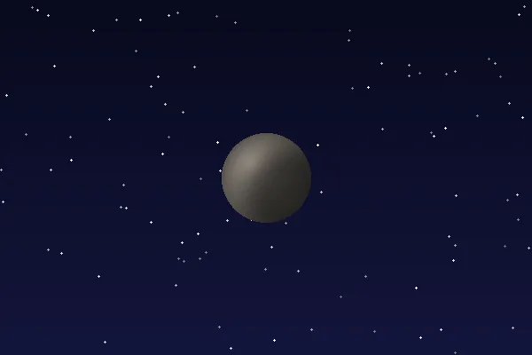
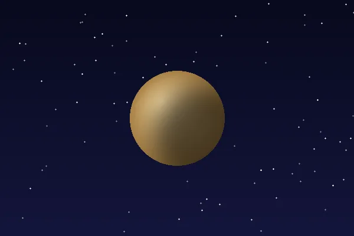
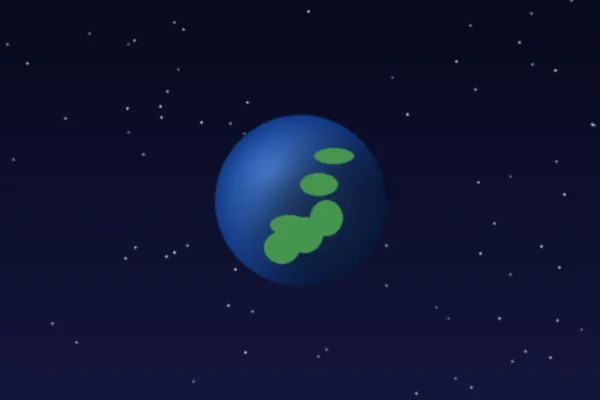
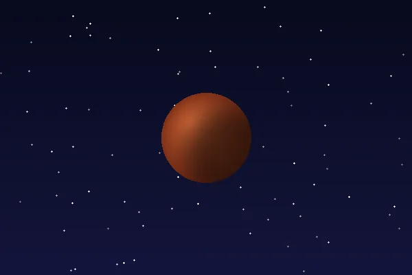
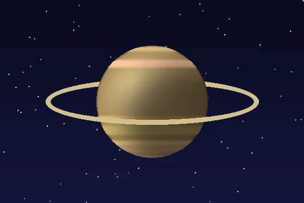
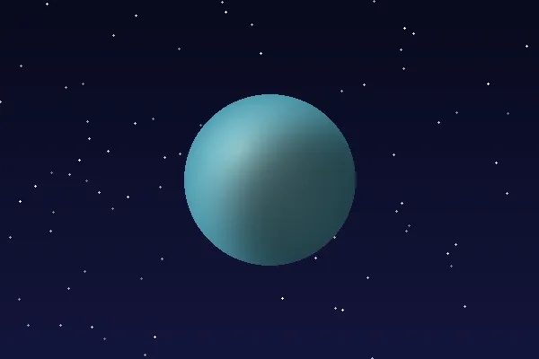
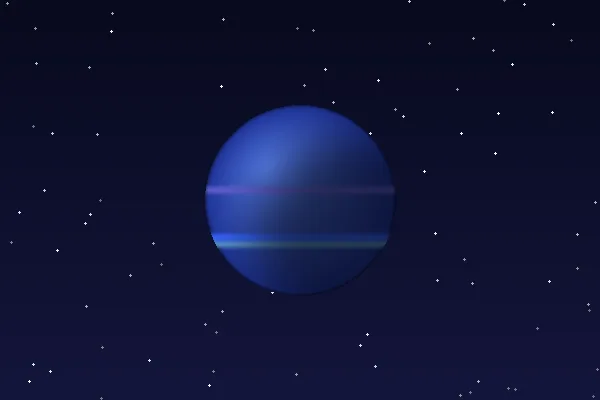

Mercurio
El más rápido
Es el planeta más cercano al Sol y da una vuelta completa en solo 88 días. Casi no tiene atmósfera, así que de día llega a 430 °C y de noche baja a -180 °C.
Planetario Estrella Polar
El sistema solar es nuestro barrio en el espacio. En el centro está el Sol, una estrella, y a su alrededor giran ocho planetas, sus lunas y millones de asteroides y cometas.
Los cuatro primeros planetas son rocosos y pequeños. Los cuatro últimos son gigantes hechos sobre todo de gas y hielo.

El más rápido
Es el planeta más cercano al Sol y da una vuelta completa en solo 88 días. Casi no tiene atmósfera, así que de día llega a 430 °C y de noche baja a -180 °C.

El más caliente
Aunque está más lejos que Mercurio, es el más caliente (unos 465 °C) porque sus nubes atrapan el calor. Gira al revés que casi todos los planetas.

Nuestro hogar
Es el único planeta donde sabemos que hay vida. Tiene agua líquida, una atmósfera que nos protege y una luna que nos acompaña.

El planeta rojo
Su color viene del óxido de hierro, como el de la herrumbre. Allí está el Monte Olimpo, el volcán más alto del sistema solar, con unos 22 km de altura.

El gigante
Es el planeta más grande: dentro cabrían unas 1300 Tierras. Su Gran Mancha Roja es una tormenta más grande que nuestro planeta.

El de los anillos
Sus anillos están hechos de trozos de hielo y roca. Es tan poco denso que, si existiera una bañera gigante, flotaría en el agua.

El planeta tumbado
Gira de lado, como una pelota rodando por el suelo. Por eso cada polo pasa 42 años de día y 42 años de noche.

El más lejano
Se descubrió en 1846 gracias a las matemáticas, antes de verlo con un telescopio. Tiene los vientos más rápidos del sistema solar.
| Planeta | Distancia al Sol (millones de km) | Diámetro (km) | Lunas | Duración del año |
|---|---|---|---|---|
| Mercurio | 58 | 4879 | 0 | 88 días |
| Venus | 108 | 12 104 | 0 | 225 días |
| Tierra | 150 | 12 742 | 1 | 365 días |
| Marte | 228 | 6779 | 2 | 687 días |
| Júpiter | 778 | 139 820 | Más de 90 | 12 años |
| Saturno | 1434 | 116 460 | Más de 270 | 29 años |
| Urano | 2871 | 50 724 | Más de 25 | 84 años |
| Neptuno | 4495 | 49 244 | 16 | 165 años |
Una frase fácil: cada palabra empieza por la misma letra que un planeta.